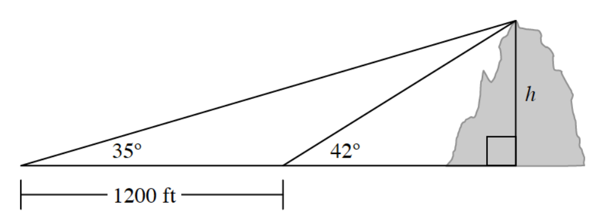

Sketch a hyperbola centered at the origin with focal points at \((0,3)\) and \((0,-3)\). Mark a point \(P\) on your hyperbola and label it with the coordinates \((x,y)\).
Write an expression for the difference of the distances from point \(P\) to each of focal points.
If the difference in the distances from any point on the hyperbola to each focal point is \(5\) units, use this distance with your expression from part (a) to create an equation.
See how far you can get rewriting your equation from part (b) in graphing form.
Write the equation of a circle with center \((4,-2)\) and radius \(\sqrt{13}\).
Solve the equation \(x^2-10x+17=0\) by completing the square.
Graph the hyperbola \(\frac{x^2}{16}-\frac{y^2}{9}=1\). Identify the center, vertices, asymptotes, and foci.
Use a matrix equation to solve the system.
\(\begin{aligned}2x+y-z&=4\\x-3y+2z&=-1\\3x+2y+z&=7\end{aligned}\)
Evaluate each of the following trigonometric expressions exactly.
\(\sin\left(\frac{5\pi}{12}\right)\)
\(\cos\left(\frac{11\pi}{12}\right)\)
Use matrix equations to solve each system.
\(\begin{aligned}x+2y-z&=7\\2x-y+3z&=4\\x+y+z&=3\end{aligned}\)
\(\begin{aligned}3r+2s-t&=8\\6r-s+2t&=2\\r+s&=3\end{aligned}\)
Rewrite each expression in terms of one trigonometric function.
\(\frac{1+\cos(2x)}{\sin(2x)}\)
\(\cos^2\left(\frac{x}{4}\right)-\sin^2\left(\frac{x}{4}\right)\)
\((1+\cot 2y)(\cos(2y)+1)\)
Graph the hyperbolas described by the equations below.
\(\frac{x^2}{9}-\frac{y^2}{4}=1\)
\(\frac{y^2}{25}-\frac{x^2}{16}=1\)
Find the standard form of the equation of the hyperbola with vertices \((\pm 4,0)\) and foci \((\pm 5,0)\).
If \(f(x)=\frac{1}{x}\), write the equation of the graph after it is shifted \(3\) units left and \(2\) units down.
The graph of \(y=x^5-2x\) is to be shifted \(3\) units up and \(2\) units to the right. Write the equation of the new graph.
To determine the height, \(h\), of Mount St. Melon in the Cantaloupe Mountains, two angle measurements were taken \(1200\) feet apart along a direct line toward the mountain. Using these measurements, calculate the height of the mountain.
